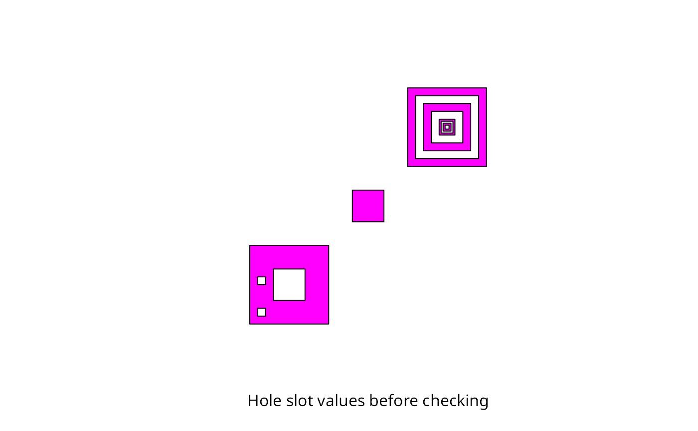

comment-functions.RdUtility functions for assigning ownership of holes to parent polygons
createSPComment(sppoly,which=NULL,overwrite=TRUE)
createPolygonsComment(poly)
set_do_poly_check(value)
get_do_poly_check()Object that inherits from the SpatialPolygons class
Vector, which subset of geometries in sppoly should comment attributes be generated
Logical, if a comment attribute already exists should it be overwritten
Object of class Polygons
logical value to set “do_poly_check” option, default TRUE
The helper functions get and set the imposition of checking of objects inheriting from SpatialPolygons for proper assignment of hole interior rings to exterior rings in Polygons objects. The internal GEOS representation defines a POLYGON object as a collection of only one exterior ring and from zero to many interior rings, so an sp Polygons object corresponds to a GEOS MULTIPOLYGON object, but without proper hole assignment. By default do_poly_check is TRUE; if it is set to FALSE using set_do_poly_check(FALSE), and the Polygons object is not valid in GEOS terms, GEOS may crash R, which is why checks are imposed by default.
The details below show how hole assignment is handled in the package; here we assume that the hole status slots of all Polygon objects in a given Polygons object are set correctly. In the examples below, we use a data set from maptools which has the holes correctly assigned, and we see that the SpatialPolygons object is geometrically valid both initially and after removing the comment attribute on the only Polygons object in usa - regenerating internally within rgeos from the hole status slots since do_poly_check is TRUE.
If we modify usa by setting all hole status slots to FALSE, the SpatialPolygons object is geometrically invalid even though a comment attribute can be created - the function createSPComment is deceived by the incorrect hole status slots. To rectify this, we use checkPolygonsHoles from maptools on each Polygons object. This function calls gContains, gContainsProperly, gEquals and createPolygonsComment from rgeos to check whether the hole status slots are set correctly. Experience shows that many imported datasets from for example publically provided shapefiles have incorrect hole status values. Running checkPolygonsHoles is time-consuming when the number of member Polygon objects is large - attempts will be made to make this more efficient.
The geometries handled by GEOS are assumed to be planar, so that any rgeos functions making measurements will give incorrect results when used on geographical coordinates measured in decimal degrees. Topological functions may work satisfactorily, but will not understand spherical wrap-around.
In order for rgeos to function properly it is necessary that all holes within a given POLYGON or MULTIPOLYGON geometry must belong to a specific polygon. The SpatialPolygons class implementation does not currently include this information. To work around this limitation rgeos uses an additional comment attribute on the Polygons class that indicates which hole belongs to which polygon.
Under the current implementation this comment is a text string of numbers separated by spaces where the order of the numbers corresponds to the order of the Polygon objects in the Polygons slot of the Polygons object. A 0 implies the Polygon object is a polygon, a non-zero number implies that the Polygon object is a hole with the value indicating the index of the Polygon that “owns” the hole.
createPolygonsComment attempts to create a valid comment for a Polygons object by assessing which polygons contain a given hole (using gContains). Ownership is assigned to the smallest polygon (by area) that contains the given hole. This is not guaranteed to generate valid polygons, always check the resulting objects for validity.
createSPComment attempts to create valid comments for all or a subset of polygons within a SpatialPolygons object. Refer to Bivand et al. (2013), pages 47-48 and 132-133 for a further discussion and SpatialPolygons
Roger Bivand, Edzer Pebesma and Virgilio Gomez-Rubio, 2013. Applied spatial data analysis with R, Second edition. Springer, NY. https://asdar-book.org/
library(sp)
p1 <- Polygon(cbind(x=c(0, 0, 10, 10, 0), y=c(0, 10, 10, 0, 0)), hole=FALSE) # I
p2 <- Polygon(cbind(x=c(3, 3, 7, 7, 3), y=c(3, 7, 7, 3, 3)), hole=TRUE) # H
p8 <- Polygon(cbind(x=c(1, 1, 2, 2, 1), y=c(1, 2, 2, 1, 1)), hole=TRUE) # H
p9 <- Polygon(cbind(x=c(1, 1, 2, 2, 1), y=c(5, 6, 6, 5, 5)), hole=TRUE) # H
p3 <- Polygon(cbind(x=c(20, 20, 30, 30, 20), y=c(20, 30, 30, 20, 20)),
hole=FALSE) # I
p4 <- Polygon(cbind(x=c(21, 21, 29, 29, 21), y=c(21, 29, 29, 21, 21)),
hole=TRUE) # H
p5 <- Polygon(cbind(x=c(22, 22, 28, 28, 22), y=c(22, 28, 28, 22, 22)),
hole=FALSE) # I
p6 <- Polygon(cbind(x=c(23, 23, 27, 27, 23), y=c(23, 27, 27, 23, 23)),
hole=TRUE) # H
p7 <- Polygon(cbind(x=c(13, 13, 17, 17, 13), y=c(13, 17, 17, 13, 13)),
hole=FALSE) # I
p10 <- Polygon(cbind(x=c(24, 24, 26, 26, 24), y=c(24, 26, 26, 24, 24)),
hole=FALSE) # I
p11 <- Polygon(cbind(x=c(24.25, 24.25, 25.75, 25.75, 24.25),
y=c(24.25, 25.75, 25.75, 24.25, 24.25)), hole=TRUE) # H
p12 <- Polygon(cbind(x=c(24.5, 24.5, 25.5, 25.5, 24.5),
y=c(24.5, 25.5, 25.5, 24.5, 24.5)), hole=FALSE) # I
p13 <- Polygon(cbind(x=c(24.75, 24.75, 25.25, 25.25, 24.75),
y=c(24.75, 25.25, 25.25, 24.75, 24.75)), hole=TRUE) # H
lp <- list(p1, p2, p13, p7, p6, p5, p4, p3, p8, p11, p12, p9, p10)
# 1 2 3 4 5 6 7 8 9 10 11 12 13
# 0 1 11 0 6 0 8 0 1 13 0 1 0
# I H H I H I H I H H I H I
pls <- Polygons(lp, ID="1")
comment(pls)
#> NULL
comment(pls) = createPolygonsComment(pls)
comment(pls)
#> [1] "0 1 11 0 6 0 8 0 1 13 0 1 0"
plot(SpatialPolygons(list(pls)), col="magenta", pbg="cyan")
title(xlab="Hole slot values before checking")

if (FALSE) {
# running this illustration may be time-consuming
if (require(maptools)) {
data(wrld_simpl)
usa <- wrld_simpl[wrld_simpl$ISO3=="USA",]
lapply(slot(usa, "polygons"), comment)
gIsValid(usa, reason=TRUE)
comment(slot(usa, "polygons")[[1]]) <- NULL
lapply(slot(usa, "polygons"), comment)
gIsValid(usa)
any(c(sapply(slot(usa, "polygons"),
function(x) sapply(slot(x, "Polygons"), slot, "hole"))))
lapply(slot(createSPComment(usa), "polygons"), comment)
usa1 <- usa
Pls <- slot(usa1, "polygons")
pls <- slot(Pls[[1]], "Polygons")
pls1 <- lapply(pls, function(p) {slot(p, "hole") <- FALSE; return(p)})
slot(Pls[[1]], "Polygons") <- pls1
slot(usa1, "polygons") <- Pls
any(c(sapply(slot(usa1, "polygons"),
function(x) sapply(slot(x, "Polygons"), slot, "hole"))))
lapply(slot(createSPComment(usa1), "polygons"), comment)
gIsValid(usa1, reason=TRUE)
Pls <- slot(usa1, "polygons")
Pls1 <- lapply(Pls, checkPolygonsHoles)
slot(usa1, "polygons") <- Pls1
lapply(slot(usa1, "polygons"), comment)
gIsValid(usa1, reason=TRUE)
}
}